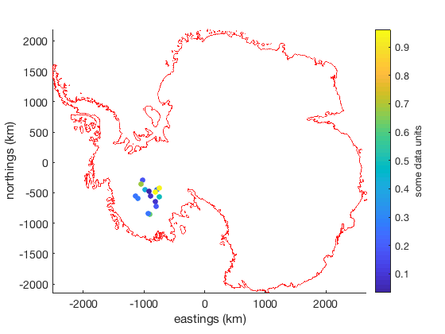

scatterps documentation
scatterps is part of Antarctic Mapping Tools for Matlab (Greene et al., 2017). Click here for a complete list of functions in AMT.
scatterps works just like Matlab's scatter or scatterm functions, but plots georeferenced data in Antarctic polar stereographic coordinates (true latitude 71°S). For example,
scatterps(lat,lon,S,C)
is equivalent to
[x,y] = ll2ps(lat,lon); scatter(lat,lon,S,C)
Contents
Syntax
scatterps(lat,lon,S,C) scatterps(lat,lon) scatterps(lat,lon,S) scatterps(...,markertype) scatterps(...,'filled') scatterps(...,'PropertyName',PropertyValue) scatterps(...,'km') scatterps(...,'meridian',meridian) h = scatterps(...)
Description
scatterps(lat,lon,S,C) displays colored circles at the locations specified by the vectors lat and lon (which must be the same size), plotted in Antarctic polar stereographic eastings and northings. S can be a vector the same length as lat and lon or a scalar. If S is a scalar, MATLAB draws all the markers the same size. If S is empty, the default size is used.
scatterps(lat,lon) draws the markers in the default size and color.
scatterps(lat,lon,S) draws the markers at the specified sizes (S) with a single color. This type of graph is also known as a bubble plot.
scatterps(...,markertype) uses the marker type specified instead of 'o' (see LineSpec for a list of marker specifiers).
scatterps(...,'filled') fills the markers.
scatterps(...,'km') plots in polar stereographic kilometers instead of the default meters.
scatterps(...,'meridian',meridian) specifies a meridian longitude in the polar stereographic coordinate conversion. Default meridian is 0.
h = scatterps(...) returns the handle of the scattergroup object created.
Example
Plot some data scattered around West Antarctica. Begin with context plotting the grounding line provided by Mouginot et al.
antbounds('gl','red','km') % some random data: lat = -80+randn(15,1); lon = -120+8*randn(15,1); z = rand(15,1); scatterps(lat,lon,50,z,'filled','km') cb = colorbar; ylabel(cb,'some data units') xlabel('eastings (km)') ylabel('northings (km)')
Citing AMT
If this function or any other part of Antarctic Mapping Tools is useful for you, please cite the paper that describes AMT.
Greene, C. A., Gwyther, D. E., & Blankenship, D. D. Antarctic Mapping Tools for Matlab. Computers & Geosciences. 104 (2017) pp.151-157. doi:10.1016/j.cageo.2016.08.003.
Author Info
This function was written by Chad Greene of the University of Texas Institute for Geophysics (UTIG), July 2015, for inclusion in the Antarctic Mapping Tools package.